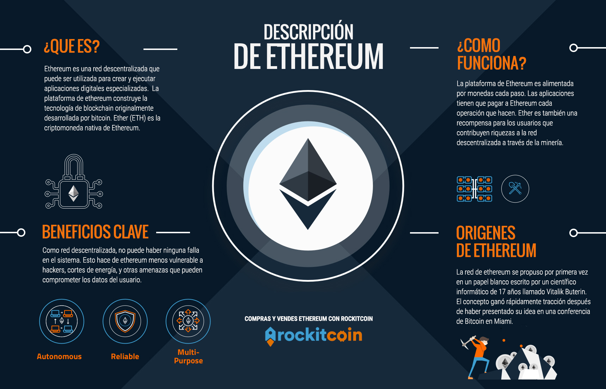

¿Que es Ethereum?
La plataforma Ethereum fue creada en 2015 por el programador Vitalik Buterin, con la perspectiva de crear un instrumento para aplicaciones descentralizadas y colaborativas. Ether (ETH), su criptomoneda nativa, es un token que puede ser utilizado en transacciones que usen este software. Como bitcoin, ether existe como parte de un sistema financiero autónomo de pares, libre de intervención gubernamental. También como bitcoin, el valor de ether se disparó en un corto periodo de tiempo.